Easy State at its core is a programmer centric visual state machine editor. It tries to take care of all the repetitive code that comes with handling state machines but allow the programmer the most flexibility possible. As such, Easy State is more than a strict state machine as it also allows behavior tree like designs as well as utility based nodes. With the 3rd version of this tool Easy State has gotten an upgrade incorporating many quality of life changes and user suggested features yielding the most powerful flexible Easy State version yet. To get a quick overview jump to the General Workflow Overview section.
Here is a list of common words and their meanings in the EasyState universe.
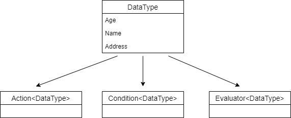
DataTypeIn essence a data type is just a data container. Think of it like a blue print for your state machine. The way Easy State is designed each state machine is strongly typed by the DataType you create. If that doesn't make sense right now don't worry, it will later. All data types inherit from DataTypeBase. DataTypeBase comes with a couple fields that are of interest.
Data Type support inheritance. Meaning that actions/conditions/evaluators that you define on a base class will be available for sub classes.
When you create a data type the will be an additional field added to the template of type DataTypeFunctionSet this field can be renamed and is used to define Actions,Conditions and Evaluators in line instead of in a separate file. More on this later.
ActionThis defines what your state machine does. If your state machine needs to increment a score or tick a timer it should be done inside of an Action.
Parameterized ActionParameterized Actions inherit from Action. They add the ability to pass a primitive argument straight from the design to an action. In order to use them create a 'Parameterized Action' from the Asset Menu. Then replace the placeholder 'TParameterType' with your desired parameter type. Currently supports int, float, string, and boolean parameter types.
ConditionConditions dictate the flow of your state machine. They are boolean and therefore always evaluate as true or false.
EvaluatorEvaluators are used when you would rather score a transition instead of returning a simple true or false. This can be useful when trying to decide between more than two possibilities.
Note: DataTypes, Actions, Conditions, and Evaluators that are file based can be renamed. Their
EasyStateScriptattributes must not be altered. Inline components can also be renamed, but any references that exist to those components inside a design will be lost.
DesignerThe Designer is an Unity Editor window that you will use to create and edit designs.
DesignDesigns are created in the Designer. A design defines a graph of nodes and connections that can be translated into a behavior to be consumed in Unity if the design is valid.
NodeA node or state references a point in the design graph where actions can be executed or update cycles delayed before traversing to the next node.
ConnectionConnects two states or nodes together. There are two types of connections.
Condition types as defined in the above core component section to decided whether or not the connection can be traversed.Evaluator types as defined in the above core component section. Each connection returns a score. The connection with the highest score is selected to be traversed.Update CycleRefers to when a state machine is told to update. Typically the first time a state machine is told to update it will start by updating the entry node(first node of the design) and continuing to update nodes until it updates a node that has a cycle type that is not Pass Through(more on this) or a node that is a leaf node. Leaf nodes automatically loop back to the entry node after being updated.
This section covers how to create components and use them inside the designer.
Start off by creating a Data Type. To do this you can either open the Assets Menu and navigate to EasyState/New Data Type or alternatively right clicking in the Unity's Project window and navigating to EasyState/New Data Type.
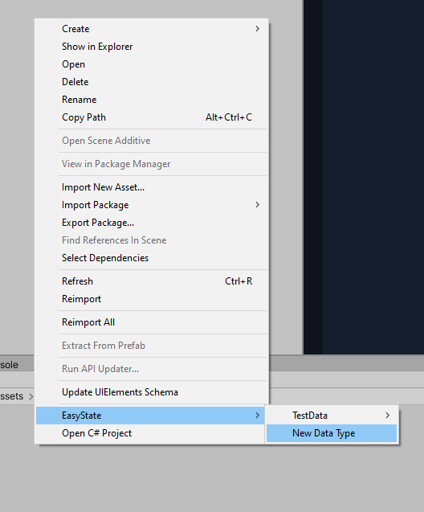
When you click on the New Data Type button you will be presented with a File Explorer popup to allow you to select where you want to save the new Data Type file. Once a location has been selected Easy State will generate two files.
Once created the new Data Type will be added to the Easy State Assets menu list. In the image above we have created a Data Type called TestData.
You will notice this menu allows you to create Actions, Parameterized Actions, Conditions, and Evaluators for particular Data Types.

Note: Easy State scans Unity's Assemblies for newly added core components. As such you can rename or delete generated scripts as you please but you should not edit the
[EasyStateScript]attribute, as this is how the framework keeps track of which components have been added/moved/or deleted. Additionally be aware that deleting components can invalidate designs and thereby delete their associated behaviors that may be being used by Easy State Machine components in your Unity Scene.
You can add components to a data type by adding components directly to the DataTypeFunctionSet inside of the Data Type file inside the constructor. There are several key methods to add functions or component to a Data Type's set.
Actions
You can add actions to the set by utilizing the AddAction method. This method requires an Action<T> where T is the Data Type and a unique name for the action.
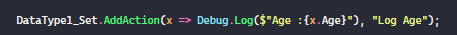
There is also an AddLoggingAction method that makes it easy to create logging actions for diagnostic purposes.
Conditions
There are multiple ways to add conditions to a set. If a field or property is of type bool it will be automatically added to the function set and will be able to be used in the designer.

You can also define a conditional function using the AddCondition

Or use a fluent API approach:

There are a few fluent API methods available to make simple comparison fast and easy to read.
Evaluator
Evaluators can be added by using the AddEvaluator method. This method requires a Func<T,float> where T is the Data Type being used and the float that is returned is the score your evaluator yields. This method also requires a unique evaluator name.

Inheritance is supported! This means that if you inherit from a Data type that you created, all the actions, conditions, and evaluators will be able to be used from the parent data type in the designer.
The first few steps are identical for all Easy State components.
Create a C# script in Unity(Create/C# Script) and delete the placeholder methods.
Add a using EasyState.Models
Add the attribute:[EasyStateScript("some-unique-string-value")] to the class.
Update the class's subtype:
DataTypeBaseAction<YourDataType>Condition<YourDataTypeEvaluator<YourDataType>
The window can be found under the 'Window/EasyState/Editor' tab at the top of Unity.The window is a draggable/dockable and behaves in the same way as other Unity windows like 'Scene' and 'Game' work.
Pan : Ctrl + Left Mouse or Middle Mouse Button Zoom: Mouse wheel Select: Left Mouse Multi-Select Left Click Background + Drag OR Ctrl + Left Click Open Element Details : Double Left Click Drag Element : Left Click Element + Drag Save : Ctrl + S Context Menu : Right Click Delete Element : Del Duplicate Element : Ctrl + D Rebuild Editor : Ctrl + R Validate Design : Ctrl + V Group Nodes : Ctrl + G
When first opening the designer you will be greeted with a loader panel that allows you to manage your designs. Assuming you have created a Data Type already it should look something like this :

Once a design has been created your design will start off with an Entry Node already created. Entry nodes act as the starting point of all designs.

With the new design open you can start adding nodes by right clicking on the designer background and picking the node preset you want.
When you right click the background of the designer you are greeted with a context menu that has by default six options.
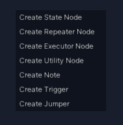
The top 4 options are all just different node presets(More on these later). While the bottom two represent different node types completely. If we create a state node and double click on it, it will open the detail panel for the node.
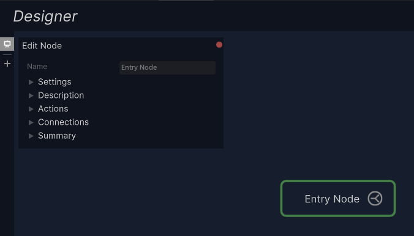
When the settings foldout is expanded you will see that nodes have three dropdowns that greatly alter the behavior of the node.
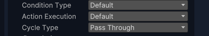
Condition Type This controls what types of exit connections this node will make.
Default(Conditional Connections)
Can have one AlwaysTrue connection to another node. If there are more than a single connection or the single connection is not an AlwaysTrue connection than a fallback connection must be defined. Which can be seen below as the "Else go to" connection.
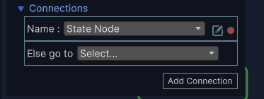
Repeat(Conditional Connections) Must have one or more connections, but has no fallback connection. Connections are evaluated from top to bottom and if no connections are picked then the state machine stays in the same state. It will then re-evaluate the connections from top to bottom on the next update cycle.
Utility(Evaluator Connections) Must have one or more connections and all connections will be evaluators instead of conditional.
Action Execution
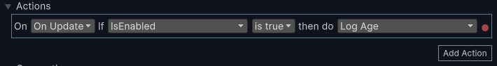
Cycle Type
All of the above can be a lot to keep straight in your head. That is why each node has a dynamic node description that updates based on its settings to tell you how a particular node will behave.

A list of all actions that will be executed in this node. Display will change based on the Action Execution Type in the settings foldout.
A list of exit connections for the selected node. You can add/remove and set the destinations of the connections from this foldout.
Use the summary foldout to describe what a particular node is doing in your own words as an alternative to creating a Note node. This note will also be visible on the node itself if you expand the node's foldout.
Double click on the triangle handle of a connection to open up its details panel.

As visible from the details panel above you can make a conditional expression of almost arbitrary complexity. To add a connection right click on a node or click on the split icon inside the nodes. To delete a node you can either delete it from the Node/Connections foldout or right clicking on the connection handle or pressing "del" when the connection is selected.
Create a group by selecting more than one node or note and either hitting Ctrl+G or right clicking on a node and selecting "Group Selected". Change the group name by double clicking on the group name in the editor. Nodes and notes can be grouped.
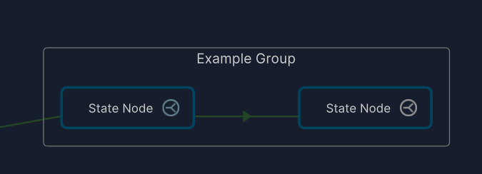
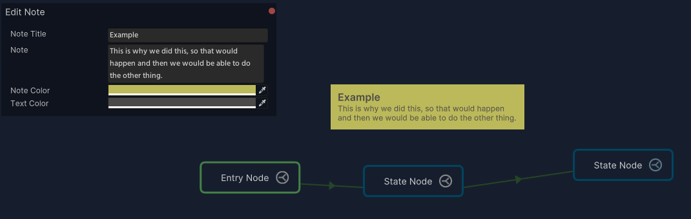

This node allows you to transition from one design to another.
A design is a Behavior in progress. The Unity State Machine components can only use Behaviors. Think of Behaviors as validated designs. When working on a design if it is valid, when you save changes to the design you will get a toast in the bottom right of the screen that indicates that a behavior was created or updated. This is a signal that everything in your design is valid. If you want to find out why your design is invalid either click the hamburger button menu at the right of the toolbar or use the shortcut key Ctrl + V to validate your design and see what is missing.

There are two main types of Unity MonoBehaviors that you will be using to interface between Unity and Easy State. The first one is the State Machine component which was created when you first created your Data Type. The second is an optional EventHandler that responds to all of the events generated by the State Machine. You will use this as an alternative to subscribing to events individually on the state machine component itself.
Assuming that you have a valid Design that has been converted into a Behavior the Easy State Machine component will look something like this:
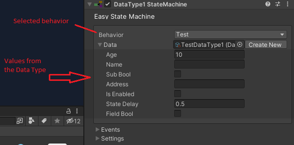
Note:
DataTypeBasethe class all Data Types inherit from is itself aScriptableObject. By default when loading up Easy State, it creates a clone of the Data Type so each state machine is using data for its own instance. This can be changed in the Settings foldout under the "Use instance data" check box. If this setting is unchecked all state machines will use the same instance of the Data Type.
Start On Controls when your State Machine begins updating.
Update Rate Controls how often/and in what way your state machine will be updated.
Log warnings The Easy State machine generates warnings when it detects something is not right. These log messages can be silenced if desired.
Individual Events This decides how you want to handle events generated by the state machine. By default it uses individual Unity Events that can subscribed to under the events foldout. If you would prefer to have a single class container handle all the events you can uncheck this option and create a event handler. This is made simple for you by a button that creates a script from a template and adds it to the gameObject.
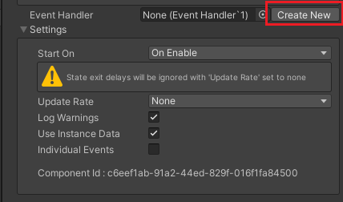
Note: due to the way the Unity Editor works if trying to assign an event handler manually to a state machine, the event handler must first be on a gameObject in the scene before it can be assigned.
The Easy State Machine component looks slightly different when the Editor is in play mode.

Whether you decide to create an Event Handler or subscribe to the Unity Events individually the events will be the same.
OnInitialize(EasyStateMachine machine)
Called once when the state machine is first loaded. A reference to the state machine is passed to the subscriber to make it easier for the subscriber to reference the data instance being used.OnPreUpdate()
Called every single time a state machine is just about to be updated. This event is especially useful to be thought of as a prep event, where you can prepare your data to be consumed by the State MachineOnStateEntered(State stateBeingEntered)
Called once when a new state is entered. A reference to the state being entered is passed to the subscriber.OnStateUpdated(State stateBeingUpdated)
Called every time a state has been updated. A reference of the state that was updated is passed to the subscriberOnStateExited(State stateBeingExited)
Called once when a state is being exited. A reference to the state being exited is passed to the subscriber.OnExitDelayStarted(float delayAmount)
This event is called after the OnStateExited event if the state being exited has an exit delay.OnPostUpdate
This event is called when an update cycle for a state machine is completed. This is a useful event to use to react to changes that have taken place inside the State machine, perhaps to apply the changes that it calculated.
This component is a singleton object that will be created at runtime if one does not already exist in the scene. The picture above shows the component while in Play Mode. When in play mode it displays various stats about how many state machines it is updating. Part of a state machine's initialization process is to register itself with this component. Once registered the Easy Refresher component orchestrates all the scheduled updates for all the state machines in the scene. This has various benefits the main one being that instead of 2000 MonoBehavior's update methods being invoked you have one MonoBehavior that handles the update.
This window is pretty simple. Before entering play mode, select the state machine from the open scene that you want to debug. Then enter play mode.
Note: while the debugger works at any refresh rate, it may be beneficial to slow down the update process by going to the state machine's inspector and underneath the settings foldout selecting a slower update rate so you have time to inspect the values and update paths.
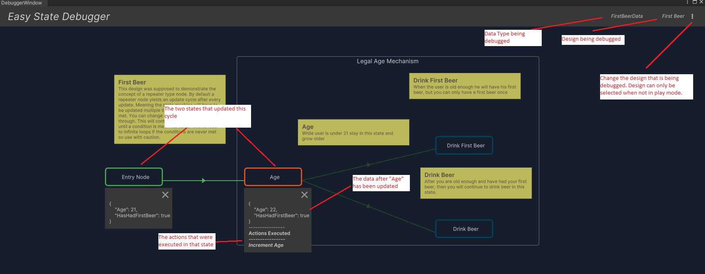
To format the data popups seen above implement the ICustomDataTypeFormatter interface on your Data Type. Rich text is supported, here is a full list of rich text tags that can be used.
The settings asset can be found at EasyState/Resources/Settings.asset. Each setting has a tooltip explaining more about its uses.

By default data is stored in Assets/EasyStateData folder. This can be changed by updating the settings and changing the "Easy State Data Folder" setting to a new home. This is best changed before you start creating designs and data types. The steps to move the data folder are:
Easy State version 3 is incompatible with version 2. But the concepts translate. In version 3 several 3rd party dependencies have been removed and more Unity native features have been leveraged to create a better experience. Essentially, the entire asset was re-written from scratch and is now much more stable and maintainable. Here is a list of new features that are in version 3 that were missing in version 2
In older versions of Unity Newtonsoft was not included by default. If you are getting errors about Newtonsoft not be found go to:
"Assets/EasyState/Newtonsoft/Runtime/Newtonsoft.Json.dll"
Check "Include/Editor" option and apply changes.
then go to:
"Assets/EasyState/Newtonsoft/Runtime/AOT/Newtonsoft.Json.dll"
Check whatever build platform your game is using.
Datatype function require captured variables in lambda's to work. Here is an example of the wrong way to declare a function.
TestDataType_Set.AddAction(data => _stateEntered = Time.time, "Enter State ");
Notice how this function is not using the captured variable? It should instead be initialized like this:
TestDataType_Set.AddAction(data => data._stateEntered = Time.time, "Enter State ");
Easy State Machine Data all inherit from DataTypeBase which inherits from UnityEngine.ScriptableObject as such, serialization of this data is trivial. You should use your data type to contain all the state for the state machine. I.E. your components (Actions,Conditions, etc) should not contain any state. Your conditions should read the state of your data, and your actions should mutate that state. You should use the OnInitialize event on the EasyStateMachineComponent to initialize your data type's state.
Event Handlers should be used to react to changes in your state machine and apply these changes to your Unity Scene(i.e. trigger animations, destroy gameObjects etc). As of version 3.1, EventHandlers are now easy to use on a 1:1 or a 1:Many relationship to state machines. One thing to keep in mind with EventHandlers is that the EasyStateMachine component has a field named 'Event Handler'. This expects an object of type EventHandler<T>. Since Unity doesn't handle generics very well you must first add your event handler to a gameObject first and then use that gameObject as a reference for the 'Event Handler' field. Otherwise the connection will not work.
Simply get a reference to the state machine and call the GetDataInstance method. Please note that this will return the object as DataTypeBase so you will need to cast it to whatever data type you are using.
var stateMachine = GetComponent<EasyStateMachine>();
EasyState.Models.DataTypeBase data = stateMachine.GetDataInstance();
This is a Condition that can be used by all designs, it always returns true and is the default condition used by new connections.
This is an parameterized Action that can be used by all designs and is useful for logging debug messages as you are testing out your designs.
Create a data type As mentioned in the 1.1 Creating Core Components section, you can create a data type by right clicking in the Project pane
Once that data type is created, open up the designer "Window/Easy State/Designer" and create a design using your new data type.
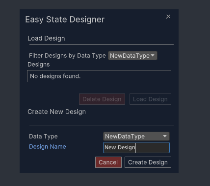
Create your design and save it. Make sure you get a "behavior created" or "behavior updated" toast on save.
If you did not get the behavior confirmation message hit Ctrl+V to validate your design and see what the errors are.
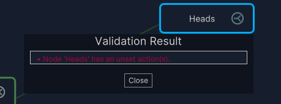
Correct any errors and retry saving.
Create an empty gameObject in your scene and attach a {YourDataType}StateMachine component to that gameObject.
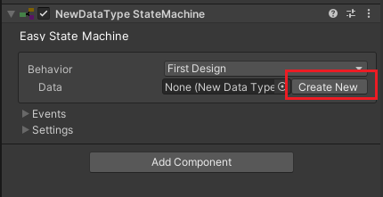
Create a new data type asset or select an existing asset and set the "Data" field of the component.
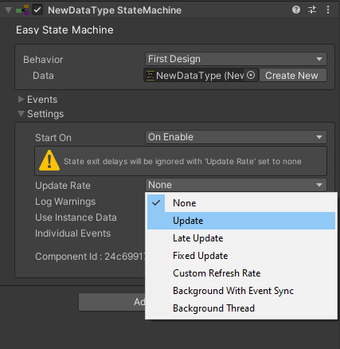
Select an Update Rate
Click play and your state machine should be running!
We are going to create a state machine that logs "Heads" or "Tails" to the console randomly. This will help cement the ideas in the above workflow section.
Create a new folder in your Assets folder titled "FirstDataType".
In that folder right click and select "Create New Data Type"
Select your newly created folder as a destination and name the data type "FirstDataType".
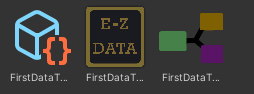
Double click on the newly created data type to open it up in your script editor.
Let's add our random condition and two logging actions to our data type.
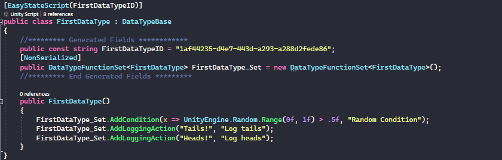
Open up the designer, if the design loader isn't visible click the plus icon in the left column to open it up. In the "Create New Design" section, select "FirstDataType" as your Data Type and create a design named "First Design".
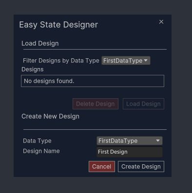
Create the design, and add two state nodes to the design by right clicking the background and selecting "Create State Node". Name one state "Heads" and the other "Tails".
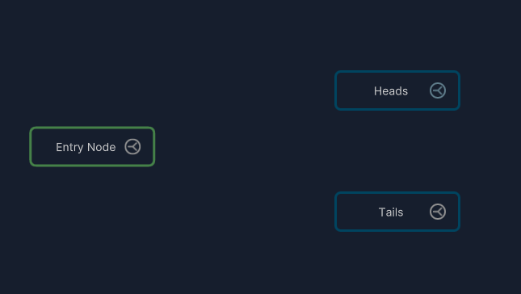
Click the split icon on the entry node to create a connection, then click on the heads node to make the connection.
Double click on triangle handle in the new connection to bring up the connection details panel.
Select the random condition as the connection's condition.

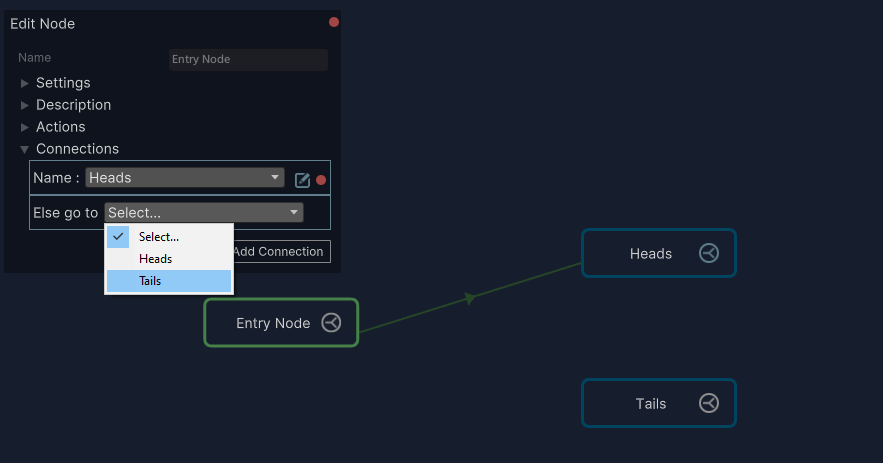
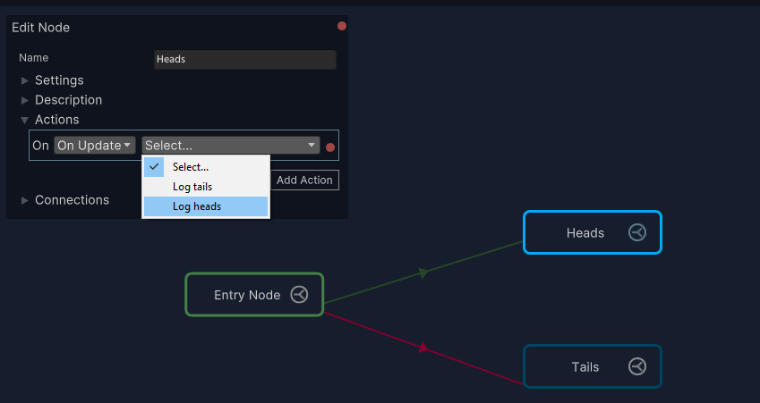
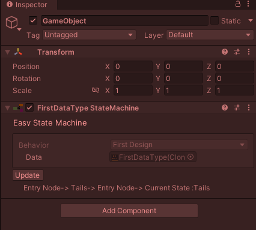
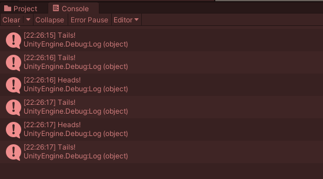
Let's set up a simple scene with an agent that patrols through a set of waypoints. If you haven't done the 'First State Machine' tutorial yet it is recommended that you do that first to get a little more familiar with the interface. This demo can be found completed under EasyState/Samples/Patrol
Set up a scene in Unity with a floor, some obstacles, and a cylinder to represent an agent.

Add a series of way points for your agent to traverse, for example: 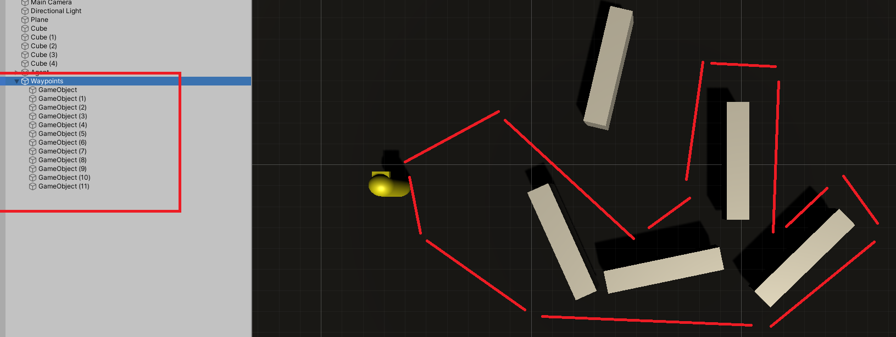
Create a DataType called PatrolData with the following fields:
public Transform[] Waypoints;
public float Speed;
private int _currentIndex;
PatrolData_Set.AddCondition(data => Vector3.Distance(data.FSM_Transform.position, data.Waypoints[data._currentIndex].position) < .1f, "Has Reached Target");
PatrolData_Set.AddAction(data =>
{
var nextMove = Vector3.MoveTowards(data.FSM_Transform.position,data.Waypoints[data._currentIndex].position, data.Speed * Time.deltaTime);
FSM_Transform.position = nextMove;
FSM_Transform.LookAt(data.Waypoints[data._currentIndex]);
}
PatrolData_Set.AddAction(data => data._currentIndex = (_currentIndex + 1) % data.Waypoints.Length, "Pick Next Point");
PatrolData data type named 'Patrol'.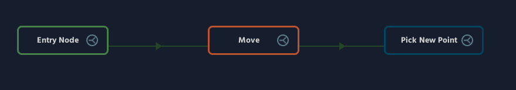
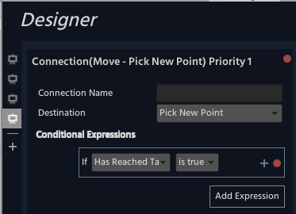
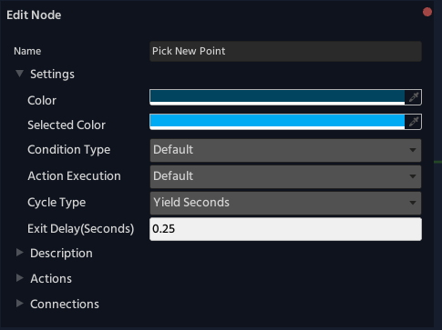

PatrolDataStateMachine component to your agent, click the 'Create New' button on the data type field and add a reference to the newly created asset.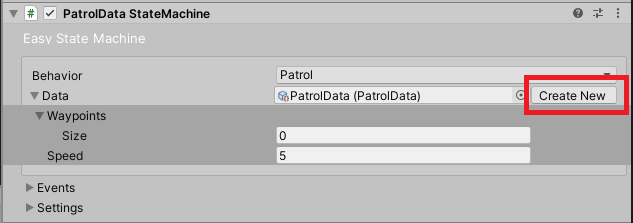
PatrolDataStateMachine script and add the following method: public void OnStateMachineInitialized(EasyStateMachine stateMachine)
{
var data = stateMachine.GetDataInstance() as PatrolData;
var transformsParent = GameObject.Find("Waypoints");
//skip the parent transform
var transforms = transformsParent.GetComponentsInChildren<Transform>().Skip(1).ToArray();
//set the Waypoints field
data.Waypoints = transforms;
}
PatrolDataStateMachine component hook the method you just created to the OnInitialize event.
Congratulations on your first operating state machine. From here you can fiddle around with various settings like refresh type. Maybe use the event handler to respond to different points in the update cycle. In the Samples folder there is a Unity package that can be imported into a fresh project. This sample includes this state machine you just made as well as several others showcasing various aspects of Easy State functionality.There will be some video tutorials posted on YouTube where you can find a video version of the above tutorial and more.
Note: Video tutorials will refer to this as EasyState v3. The other tutorials are for older versions of Easy State. They may be helpful to fill in the gaps as the interface and workflow has changed but the core concepts are the same.